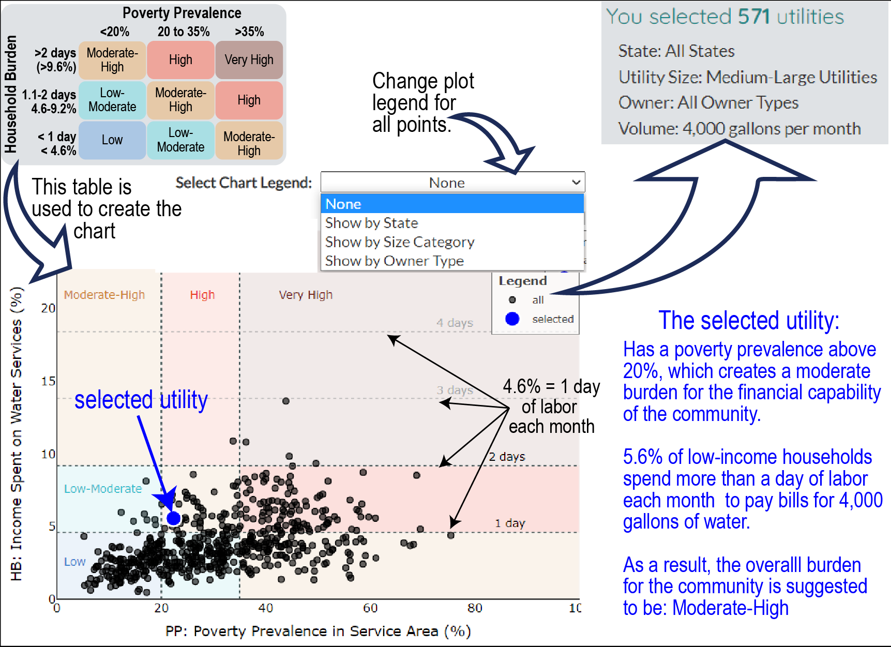

Disclaimer: All data and analysis are provisional. Please allow the dashboard to fully
load.
Explore water services (drinking water, wastewater, and stormwater) to learn about the cost of services and
affordability for single family residential households. To learn about the data, the dashboard, and any frequently
asked questions, please visit: about the dashboard.
To get started, select a utility by clicking on the
map or by using the drop down menu on the right (Select a Utility).
The map and drop-down menu can be filtered by selecting a state, utility size, or owner type. You can also type in
an address to find your utility in the search bar on the map. Next, scroll down to learn about the affordability
of water services for your utility how much water was used in a month (Select Monthly Water Usage). You can click on other tabs to learn about
your rates, who lives in your utility, and how affordability changes for different amounts of water used.
Click here to learn about the map
Zoom in to see utilities
Hover over utilities
Hover over utilities to see how many block groups share the same burden level in a utility.
Minimum Wage (Labor) Hours: Number of hours worked at minimum wage to pay for water services.
Traditional: Percent of median
income within a service area used to pay for water services.
Household Burden: Percent of low-income (20th
percentile) household income within a service area used to pay for water service.
Poverty Prevalence: Percent of households in a service area with an income lower than the 200%
of the federal poverty level.
Explore four affordability metrics below: Minimum Wage Hours, Traditional (median income), Household Burden
(20th percentile). The utility you selected above will be shown as a large blue circle on the boxplot. The
small gray dots are the metric scores for the utilities selected above.
Household Affordability: Minimum Wage Hours is concerned
about the ability of a household earning minimum wage to be able to pay for water services.
Community Financial Capability: These three metrics are
concerned about the ability of different populations within the utility to pay for water services. The
Traditional metric looks at the affordability for the representative median income household while the
Household Burden looks at the representative low-income household. The Poverty Prevalence metric
looks at the financial capacity of the community to pay for services by considering how many are below 200% of
teh federal poverty level.
Hide
Affordability Burden Charts
Affordability Burden
In 2019, a report recommended combining two metrics to capture the financial burden of water
services on single family households in a utility (Household
Burden) and the prevalence of poverty in the community (Poverty
Prevalence). We used the recommended thresholds for Poverty Prevalence and adopted days of
labor for the HB. A day of labor is roughly equivalent to 4.6% of the income earned in a month.

Summary of Utilities by Burden Level
How does burden change with water use?
Select a utility to see the plot
Hide Income-Based
Charts
Income Dedicated to Water Services
The metric shows how many households share a similar financial burden based on the percent of
the households income used to pay for water services. In a single month, each 4.6% of income represents
roughly a day of labor. This metric allows utilities to see the breadth of affordability challenges given
estimated water bills and the distribution of household incomes in the service area.
Select to see a table based on census
income brackets (a utility must be selected)
The monthly water services bill includes how much a household would pay each month for drinking water,
wastewater, and stormwater services for the volume of water selected above. To learn more about how we
estimate the monthly bill visit our methods page and scroll down to "How do we estimate monthly water bills?".
Utilities providing services to estimate monthly bills
Rates may differ from what is currently on website and/or the website link no
longer exists.
Homeowners refers to on-lot sites or private septic tanks. This bill is estimated at ~$33 per month.
There may be multiple wastewater or stormwater utilities providing services within a drinking water utility
service area.
Explore Rate Structures for Water and Wastewater
Rate structures can vary considerably between utilities. Water bills typically include some or all of the
following components: a fixed charge, a charge based on how much water is used, and surcharges. These
components are added together to estimate a monthly bill based on the volume of water selected above. Select
whether you would like to compare bill components for drinking water or wastewater services. The left chart
provides how much each thousand gallons of water costs (usage charge only). The right chart shows how much
of the monthly bill comes from fixed charges, usage charges, and surcharges.
What type of bill do you want to explore?
Social and economic characteristics in my service area
The gray lines in each chart show the utilities selected from the options to the right of the map (state,
size, and ownership). If a utility is selected in the map or drop-down menu, the utility will be highlighted
in the plot and the chart title will change to describe the selected utility. You can explore how population
and unemployment have changed over time, the composition of age, race, and income within the service area, and
the age of housing infrastructure. These community characteristics provide some context of who lives in the
service area and their potential to afford services.
Is population growing, shrinking, or stable?
What percentage of customers are within working age?
What is the racial and ethnic composition?
What is the household income distribution?
How has unemployment changed over time?
How has COVID-19 affected unemployment?
When were houses built (infrastructure age)?
Summary of affordability metrics by volume of water used and currently
recommended guidelines
The volume of "reasonable" water use for "essential" purposes for a single person is assumed to be 50
gallons per day (1,500 gallons per month). However, more water is often used in the U.S. The amount of water
"reasonable" for "essential" purposes depends on how many people live in a household. This chart shows how
much water use can vary per household based on the number of people and volume of water each person uses.
Percent of utilities by burden level
This chart summarizes the percent of utilities by burden level given selections in the map above by
combining HB and PP indicators. Visit our about affordability metrics tab for more details.
Percent of utilities by days worked at minimum wage
This chart summarizes the percent of utilities by the number of hours (assuming 8 hour work day) a
minimum wage worker must spend to pay water bills each month.
Percent of utilities by poverty level
This chart summarizes the percent of utilities by the proportion of their community living below 200% of
the federal poverty level (nothing to do with rates and doesn't change based on usage).
Median-income household revenue going to water services
This chart summarizes percent of a median household's (50th percent) income that is spent on water
services. We provide this information in terms of the number of work days spent to pay for services with
one work day representing 4.6% of monthly income.
Low-income household revenue going to water services
This chart summarizes percent of a low-income household's (20th percent) revenues that are spent on
water services. We provide this information in terms of the number of work days spent to pay for
services with one work day representing 4.6% of monthly income.